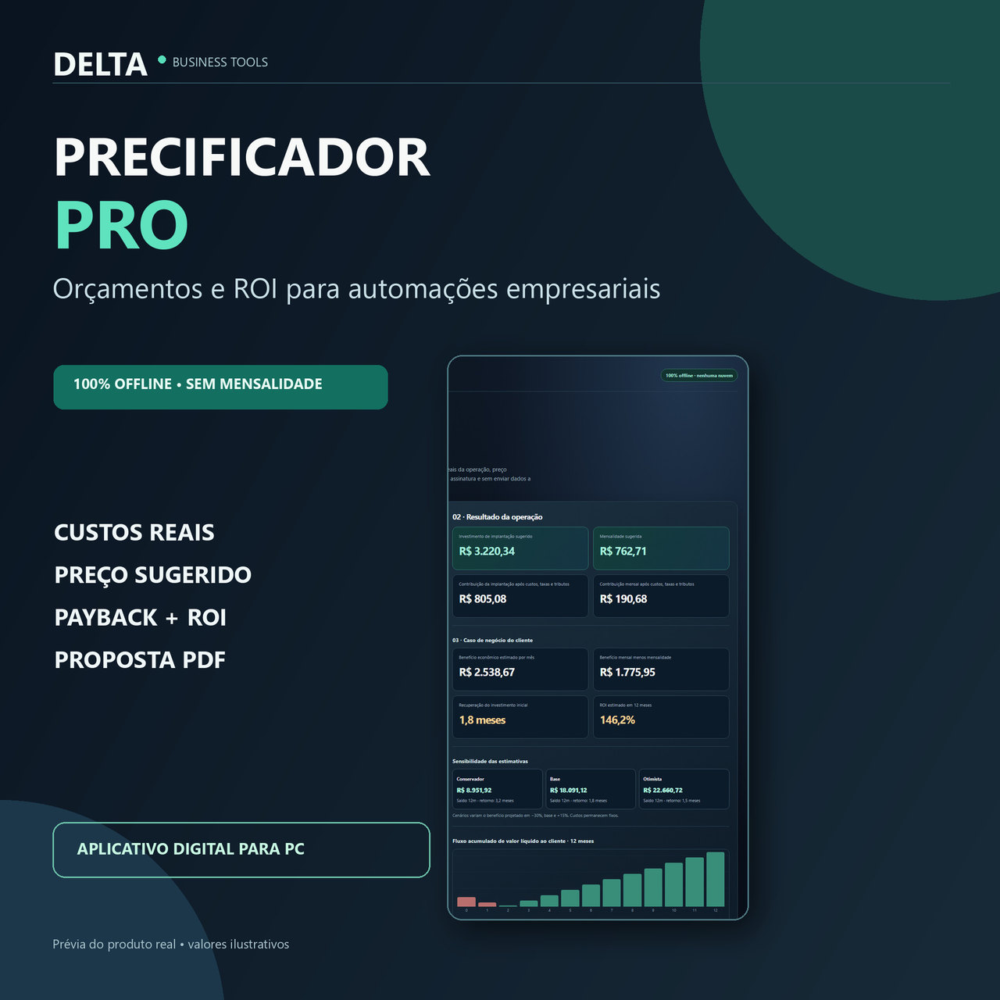

SOFTWARE PARA PROFISSIONAIS
Precificador PRO
Calculadora offline que combina custos de implantação, manutenção, margem e estimativas de retorno de projetos de automação.
Sem mensalidade do aplicativoOrçamento + ROIPDF, CSV e JSON
Explorar o produto